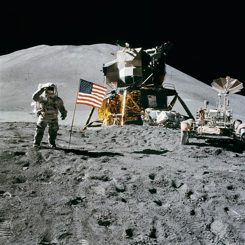

PARCEIROS

SERVIÇOS
A NASA já registrou mais de 3 milhões de fotos feitas pelo satélite Terra, em órbita desde 1999. Todas essas fotos são de domínio público, você pode ver e se maravilhar à vontade com o nosso universo.
Para ser considerado oficialmente um astronauta pela NASA, você precisa viajar pelo menos 50 milhas acima da superfície da Terra, o que dá aproximadamente 80km.
O grande objetivo atual da NASA é ter humanos morando em Marte por volta de 2030. Está perto, né?